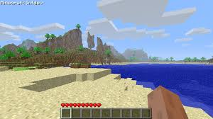

Minecraft was released on May 12, 2009 and the fist version of minecraft was called "Cave Game". It was basically a flat world with nothing in it except NPC. The only thing you could do there is place and break blocks.

Minecraft then released alpha v1.0.0 on June 30, 2010. It was the second of two versions released on that date during the Infdev phase.
After alpha v1.2.6 the infdev phase has ended and minecraft beta 1.0 has been released on December 20, 2010.
| Version | Date | Why its popular |
|---|---|---|
| a1.0.16_02 | Aug 13, 2010 | Herobrine spotted |
| a1.1.2_01 | Sept 23, 2010 | Stable and nostolgic |
| a1.2.6 | Dec 3, 2010 | Nether and biomes |
| a1.0.11 | July 23, 2010 | Classic feel |
Want to know more about the beginning of minecraft?
Click here!But if you want to read about modern minecraft
Click here!